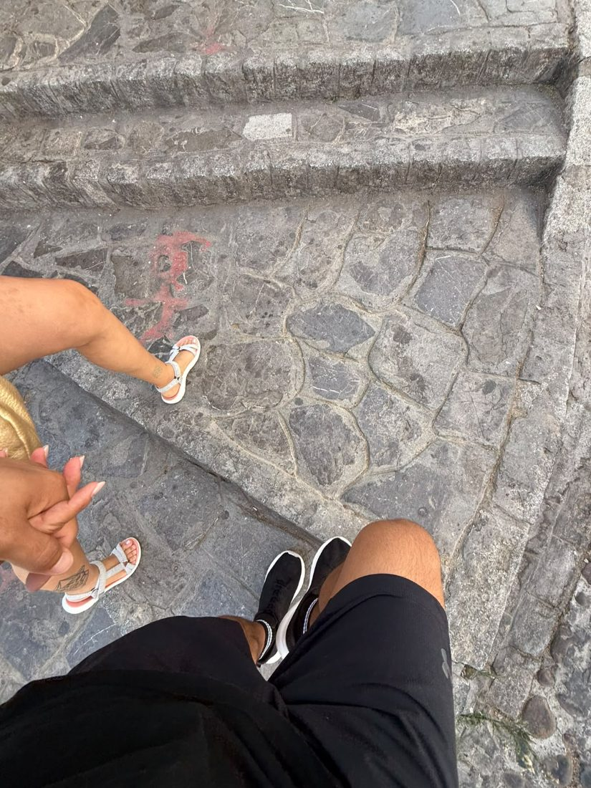
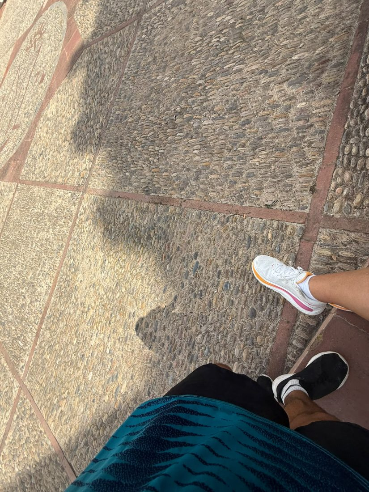
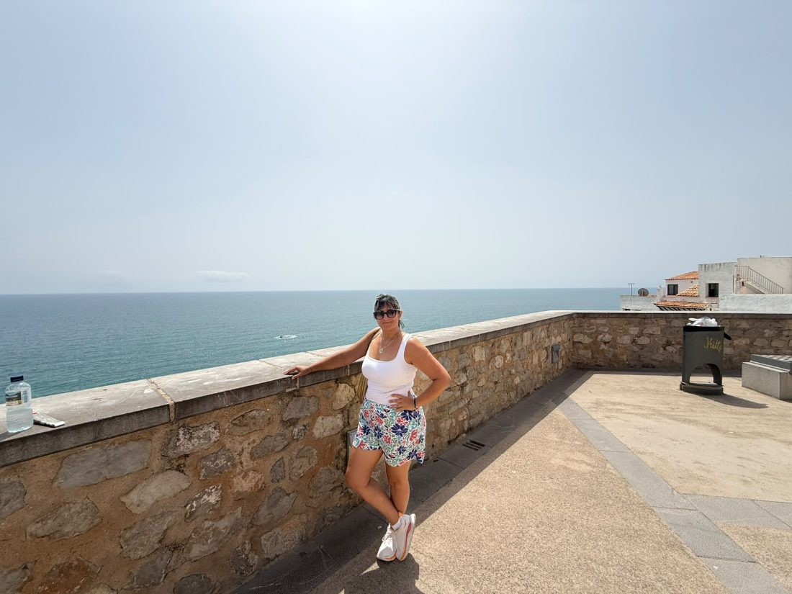
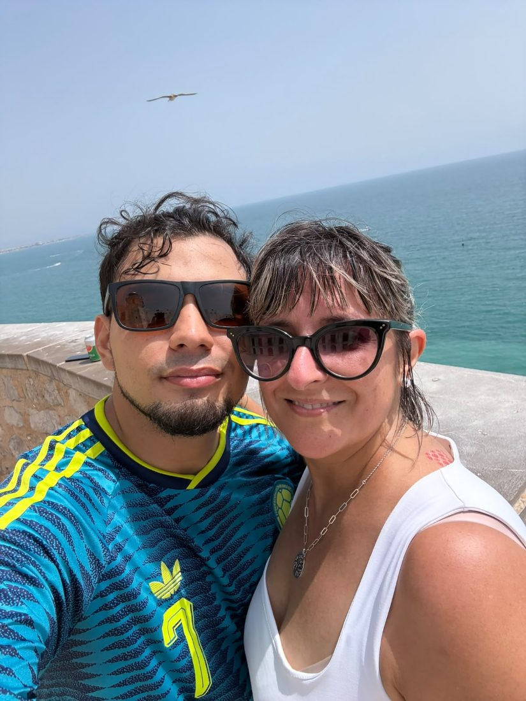
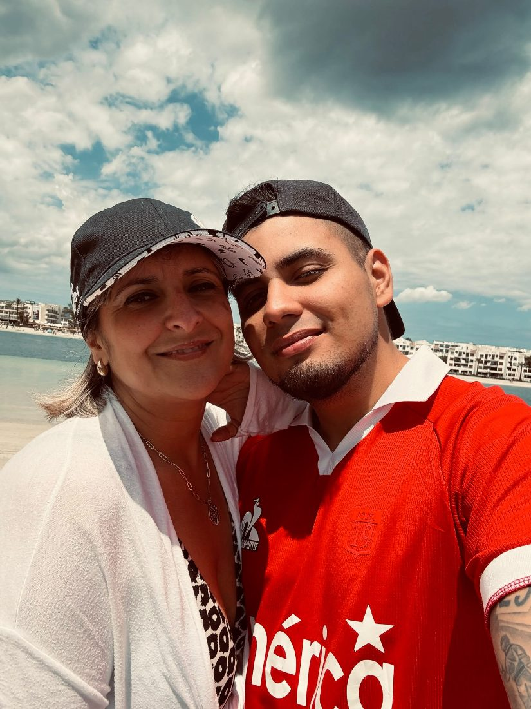
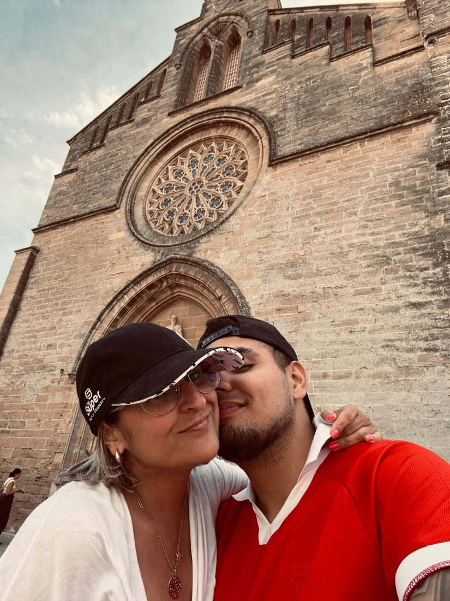
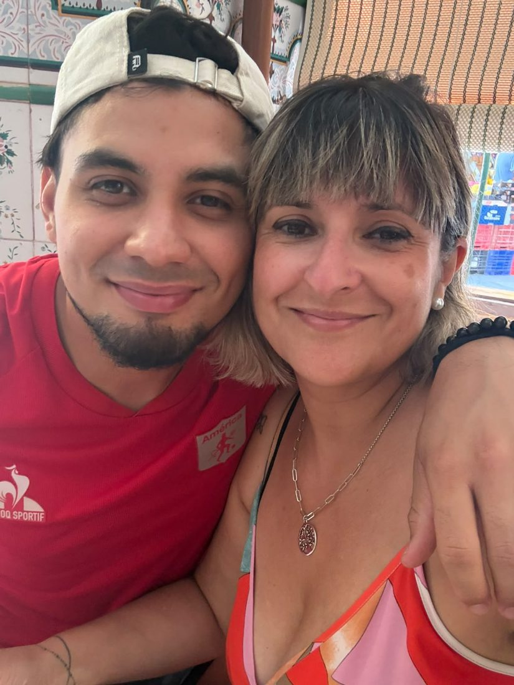
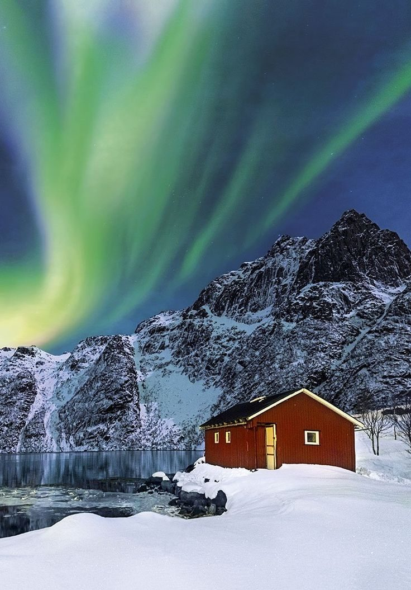
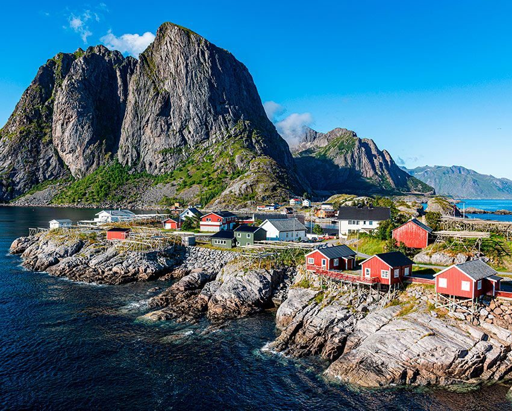
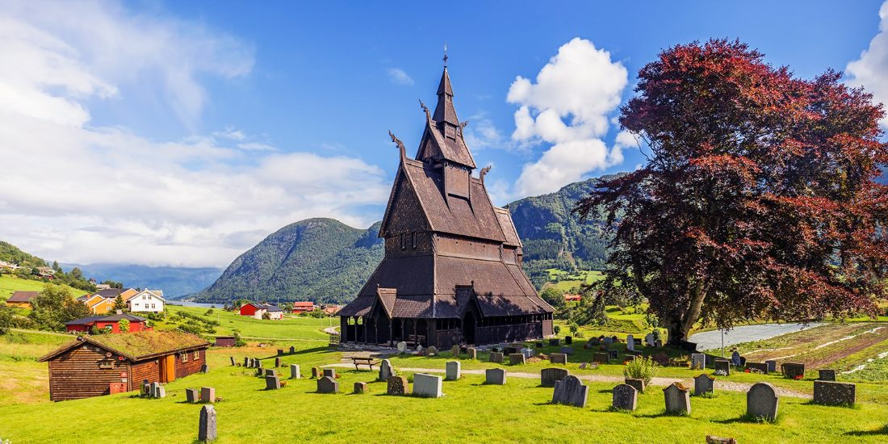

Para Raquel
Compartiendo todo esto contigo me di cuenta de una cosa: es contigo con quien quiero estar.
Miré al suelo
y vi dos pares de pies
yendo al mismo sitio
sin habernos puesto de acuerdo.
Así empezó todo:
sin esfuerzo.


Y aquel mensaje de diciembre,
escrito casi sin pensarlo,
fue el principio de todo esto:
de los viajes, de las fotos,
de querer estar donde tú estés.


Hubo días sin plan,
sin nada que contar:
arena, viento,
una gorra torcida.
Y aun así los recuerdo.
Contigo lo normal
se me queda bonito.

Te besé delante de una piedra
que llevaba siglos ahí,
y pensé que nosotros
también sabemos aguantar.


Me di cuenta tarde,
o puede que justo a tiempo:
no eran los sitios,
eras tú.
Que venga lo que tenga que venir:
lo bueno lo celebramos
y lo difícil lo superamos.
Juntos, siempre juntos.
Te amo, Raquel.
Próximamente
El sitio de la próxima foto ya tiene nombre. Solo falta que me digas que sí.



P.D. Ve preparando el abrigo.
Gerson